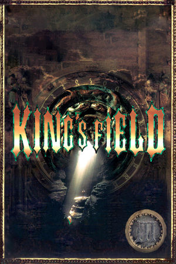

PlayStation
Originally released in Japan on June 21st, 1996, King's Field III is a first-person action RPG developed and published by FromSoftware, and the third entry in the King's Field series. Just months later it arrived in North America (November 20th, 1996) as "King's Field II", published by ASCII Entertainment; the game Western players know as King's Field II is actually the Japanese King's Field III.
The game takes place in the kingdom of Verdite with the player taking the role of Verdite prince Lyle Walisis Forester as he struggles to uncover the reasons behind his father King Jean's sudden descent into madness. Lyle explores the tunnels beneath Verdite, fighting monsters, gathering equipment, learning magic, and uncovering the dark secrets buried below. Like its predecessors, the game offers slow, deliberate, atmosphere-heavy combat with real-time 3D graphics, and critics responded well: GameRankings gave it a score of 82%, and Electronic Gaming Monthly covered it with the wry headline "Moonlight Sword Is Missing - Again".
FromSoftware
- Official developer website.
King's Field Neocities
- A cool fan site for the King's Field franchise.
King's Field Fandom Wiki
- A fan wiki dedicated to the whole series, with maps, bestiary and item data.
DuckStation
- The best PSX emulator.
King's Field III Manual (JP)
- PDF copy of the manual in Japanese.
King's Field II Manual (US)
- PDF scan of the official English manual for the Western release.
Sword of Moonlight
- A really cool tool for creating King's Field-like games.
Steam Grid DB (KF3)
- Contains lots of cool options for artwork that can be used in your Steam library.